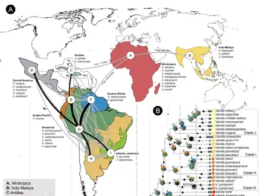
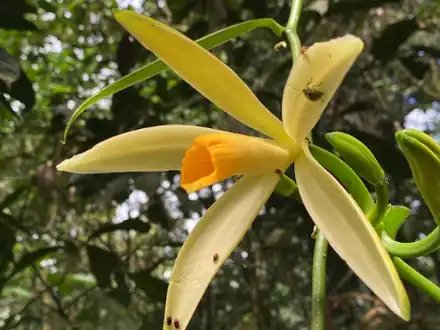

Research
Read more →
Phylogenetics and Evolution
We use phylogenomics to reconstruct the evolutionary relationships of orchid lineages such as Vanilla, explore patterns of genomic discordance, and trace how they diversified across the Neotropics.

Systematics
Through fieldwork and herbarium taxonomy we describe new species, revise genera, and build taxonomic catalogs of Andean and Amazonian orchids, including a comprehensive catalog of Peruvian orchids.

Ecology
We study the natural history of orchids and their interactions with pollinators, from the Amazon lowlands to cloud forests and páramos, to help safeguard their future.